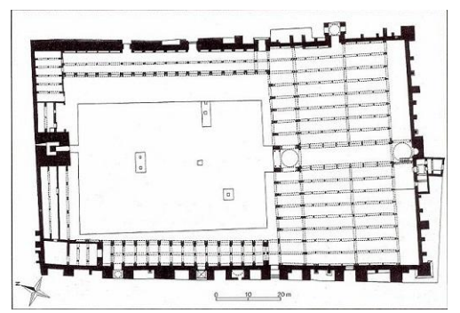
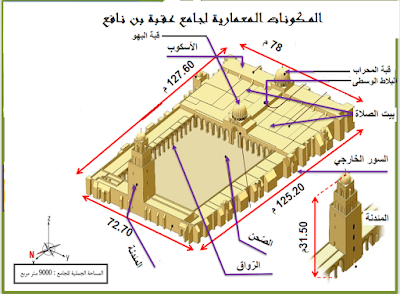

فرض مراقبة عدد 3 - تاريخ
معهد محمد علي العنابي برأس الجبل - السنة الدراسية 2013/2014
الأستاذ: حاتم بلخوجة - المدة: 30 دقيقة
القسم: الأولى ثانوي
تعليمات
- أجب بدقة ووضوح على جميع الأسئلة.
- بالنسبة للرسم (القسم الأول) استعن بالصورة المرفقة.
- التحليل الكتابي يعتمد على الفهم والاستدلال من الدرس.
القسم الأول (8 نقاط)

الوثيقة: رسم تخطيطي لجامع عقبة بن نافع (ضع أسماء العناصر المشار إليها)
1- ضع أسماء العناصر المعمارية التالية (5 نقاط): (حسب الأرقام في الصورة)
2- للتنوع المذهبي في قيروان المغرب دور أساسي في الازدهار الفكري: فسَّر ذلك؟ (3 نقاط)
القسم الثاني (12 نقطة)
"يعتبر الجامع الأعظم بالقيروان نموذجاً للعمارة الإسلامية ببلاد المغرب": صف هذا المعلم متبعاً التمشي التالي:
- الشكل الخارجي
- التخطيط
- مواد البناء
- عمليات التوسعة
- العناصر الزخرفية
📚 تصحيح الفرض وتحليل معمق
🔹 القسم الأول (8 نقاط)
1- تسمية العناصر المعمارية (5 نقاط):

التصحيح: أسماء العناصر الأساسية
الإجابة المتوقعة (حسب الترقيم المعتاد):
- 1- المئذنة (الصومعة): برج مربع بارتفاع 31م، ثلاث طبقات تنتهي بقبة.
- 2- الصحن: ساحة مكشوفة محاطة بأروقة، بها صهاريج مياه وساعة شمسية.
- 3- بيت الصلاة: قاعة الأعمدة التي تحتوي على المحراب والمنبر.
- 4- المحراب: تجويف في جدار القبلة، قوسه حدوي تعلوه قبة مزخرفة.
- 5- قبة البهو / قبة المحراب: إحدى القباب البارزة في بيت الصلاة.
(يمكن قبول تسميات دقيقة أخرى مثل الرواق أو المنبر حسب ترقيم الصورة).
2- دور التنوع المذهبي في الازدهار الفكري (3 نقاط):
شكلت القيروان ملتقى للمذاهب الإسلامية (المالكية، الحنفية، والمعتزلة...) مما أدى إلى:
- ثراء النقاش الفقهي والكلامي: تبادل الآراء وظهور مؤلفات في أصول الدين والفقه المقارن.
- تشجيع الترجمة والتأليف: احتضن بيت الحكمة مختلف الاتجاهات الفكرية.
- استقطاب العلماء: جذبت القيروان علماء المشرق والأندلس.
- بروز أعلام متعددين: مثل الإمام سحنون وابن الجزار.
التحليل: لم يكن التنوع سبباً للفرقة بل محفزاً للاجتهاد والإبداع الفكري تحت رعاية الدولة الأغلبية.
🔸 القسم الثاني (12 نقطة) – وصف الجامع الأعظم بالقيروان
📋 تخطيط الفقرة (المنهجية المطلوبة):
- مقدمة: تقديم الجامع الأعظم كأقدم وأهم معلم ديني في المغرب الإسلامي، تأسيسه على يد عقبة بن نافع سنة 50هـ، ودوره كنموذج للعمارة الإسلامية.
- الجوهر – وصف المعلم وفق المحاور المطلوبة:
- الشكل الخارجي والأبعاد العامة
- التخطيط الداخلي (الصحن، بيت الصلاة، الأروقة)
- مواد البناء المستخدمة وسبب اختيارها
- عمليات التوسعة والتحولات التاريخية
- العناصر الزخرفية ومواضعها
- خاتمة: مكانة الجامع كمرجع معماري للمغرب والأندلس، وتجسيده لتفاعل الهندسة العسكرية مع الوظيفة الدينية والجمالية.
📝 التحرير (الإجابة النموذجية المسترسلة):
يُعد الجامع الأعظم بالقيروان، الذي أسسه عقبة بن نافع سنة 50هـ / 670م، أقدم وأضخم معلم ديني في بلاد المغرب الإسلامي، وقد ظل عبر القرون نموذجاً يحتذى في العمارة الإسلامية. يمثل الجامع لوحة معمارية فريدة تجمع بين الوظيفة الدينية والطابع الدفاعي والجماليات الزخرفية، مما جعله منارة علمية وروحية في آن واحد.
يتميز الجامع بشكله الخارجي المستطيل غير المتوازي الأضلاع، حيث يبلغ طوله حوالي 126 متراً وعرضه 77 متراً، وتحيط به جدران سميكة مدعمة بدعامات حجرية ضخمة تعزز مناعته وتذكّر بطابعه العسكري الأول. وتتوزع على هذه الجدران تسعة أبواب تؤدي إلى الداخل. وتهيمن على المبنى من الخارج المئذنة المربعة الشاهقة التي يصل ارتفاعها إلى نحو 31 متراً، والمكونة من ثلاث طبقات تنتهي بقبة صغيرة، وهي تشبه في هيئتها أبراج المراقبة والدفاع، ما يؤكد تأثر العمارة الدينية الأولى بالحصون العسكرية.
أما التخطيط الداخلي للجامع فيرتكز على صحن واسع مكشوف تتوسطه صهاريج لتجميع مياه الأمطار وساعة شمسية لتحديد أوقات الصلاة. ويحيط بالصحن من ثلاث جهات أروقة ذات أقواس حدوية الشكل ترتكز على أعمدة رخامية جلبت من مواقع أثرية سابقة. وفي الجهة الجنوبية يمتد بيت الصلاة، وهو فضاء مستطيل مسقوف بخشب منقوش، يضم سبعة عشر بلاطاً (ممراً) تفصل بينها مئات الأعمدة الرخامية ذات التيجان المتنوعة (رومانية وبيزنطية وحفصية). ويتوسط جدار القبلة المحراب، وهو تجويف نصف دائري يعلوه قوس حدوي تزينه ألواح رخامية مشغولة بدقة، وتعلوه قبة المحراب البديعة.
استُعملت في بناء الجامع مواد محلية قوية تعكس البيئة والوظيفة الدفاعية؛ فالجدران مشيدة من الحجارة المصقولة والآجر المشوي، مما أكسب البناء صلابة فائقة. أما الأسقف فصُنعت من خشب الأرز والصنوبر المنقوش. وقد شهد الجامع عدة عمليات توسعة وترميم عبر العصور، كان أهمها في العهد الأغلبي خلال القرن الثالث الهجري، حيث أعيد بناء بيت الصلاة وتوسعته، وأضيفت قبة المحراب وقبة البهو، كما تم تعزيز الأروقة حول الصحن. ورغم التغييرات المتعاقبة، بقي المحراب الأصلي محافظاً على هيئته منذ التأسيس، مما يجعله أقدم محراب إسلامي قائم في المغرب الكبير.
تتركز العناصر الزخرفية في الجامع خاصة في المحراب والمنبر وقبتي المحراب والبهو. وتتنوع الزخارف بين أشكال نباتية محورة (أوراق العنب والتين وسعف النخيل) وأشكال هندسية معقدة، بالإضافة إلى ألواح رخامية منقوشة بآيات قرآنية بالخط الكوفي. كما تساهم تيجان الأعمدة المتنوعة الأصول في إثراء الجانب الجمالي، مما يجعل الجامع متحفاً مفتوحاً لفنون العمارة الإسلامية الأولى. إن جامع عقبة بن نافع ليس مجرد مكان للعبادة، بل هو وثيقة تاريخية حية تجسد التفاعل بين الوافد العربي الإسلامي والموروث المحلي، وظل لعقود نموذجاً معمارياً انتشر تأثيره في جوامع المغرب والأندلس.
ملاحظة: يجب أن يُظهر الطالب فهماً لمراحل التطور المعماري وليس مجرد سرد للمعلومات. يكافئ الوصف الدقيق والربط بين الشكل والوظيفة.
📌 نصائح للتصحيح الذاتي:
- في السؤال الأول: الدقة في مطابقة الرقم مع العنصر الصحيح (خصوصاً التمييز بين الصحن وبيت الصلاة).
- في التفسير الفكري: الربط بين التنوع المذهبي وبيت الحكمة وحركة الترجمة.
- في وصف الجامع: ضرورة ذكر الأبعاد، المواد، والتوسعات الأغلبية مع الإشارة إلى المحراب والمئذنة.